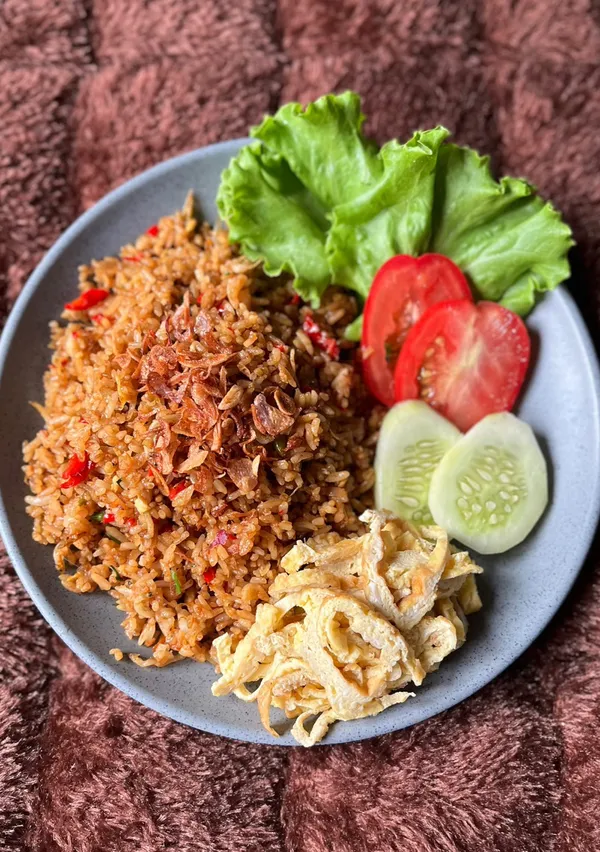

Village-style Fried Rice

A no-fuss dish that’s sure to be a favorite!
Ingredients
- 6 scoops of cooked white rice
- 30 g anchovies (briefly fried)
- 1 egg
- A pinch of Himalayan salt
- 1 tsp MSG-free stock seasoning
- 2 tbsp sweet soy sauce
- 2 stalks of celery (sliced)
- 5 red chilies
- 3 shallots
- 1/4 onion
- 1 clove of garlic
- 1 packet of ABC shrimp paste
- 4 lettuce leaves
- 4 slices of tomato
- 4 slices of cucumber
- Enough omelet, sliced into strips
- Sauté the blended spices until fragrant, then add the egg and scramble until fully cooked.
- Add the rice once it is no longer clumped together, and stir until evenly combined.
- Add the anchovies, Himalayan salt, sweet soy sauce, and stock seasoning. Stir well, then add the celery and mix again. Taste and adjust the seasoning.
- Transfer the fried rice to a plate and garnish.
- Ready to serve.
Home